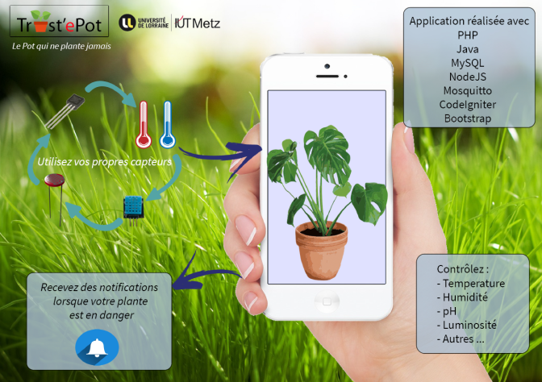
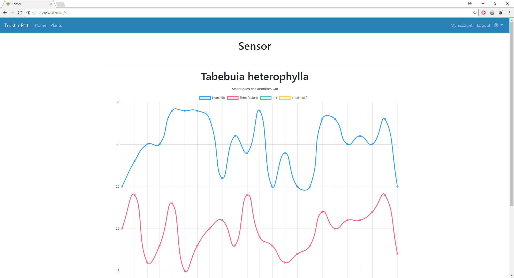
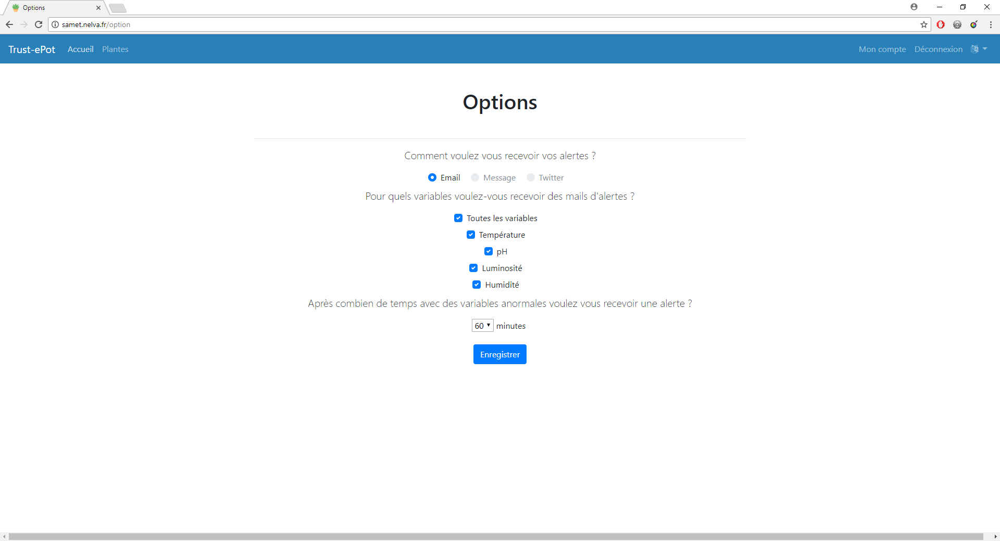
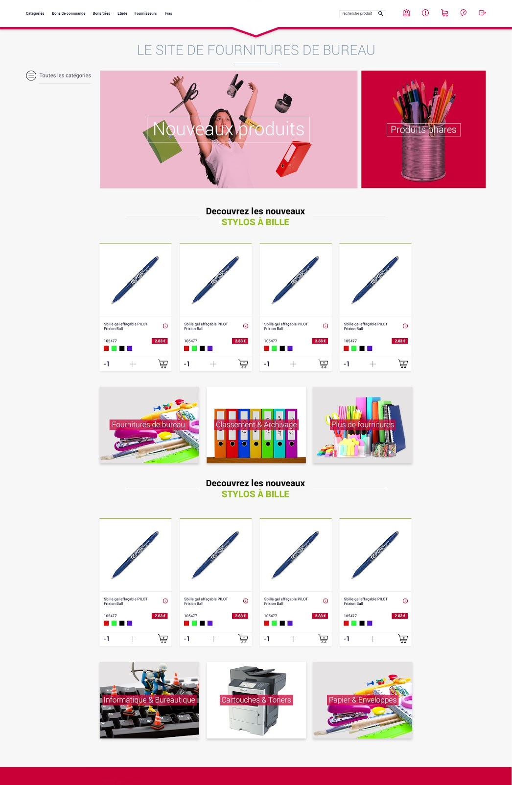
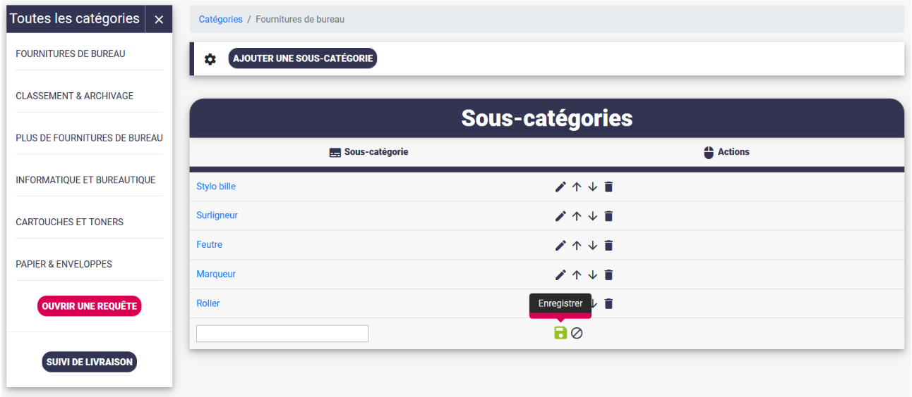
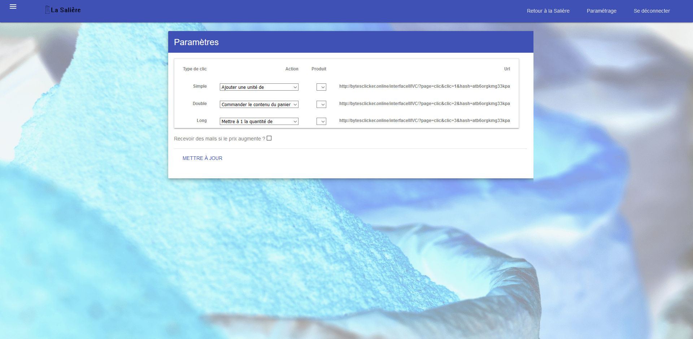
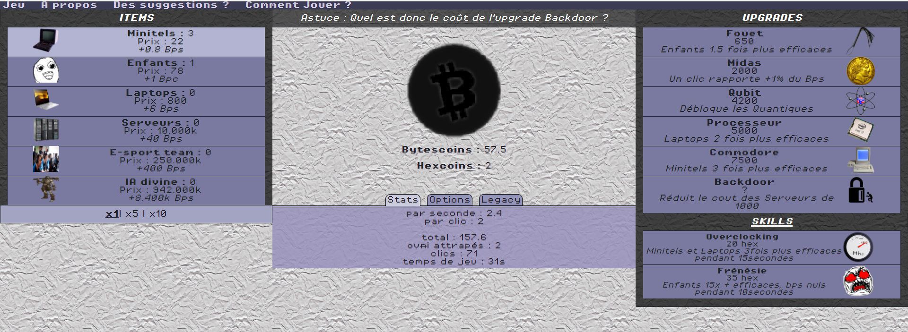
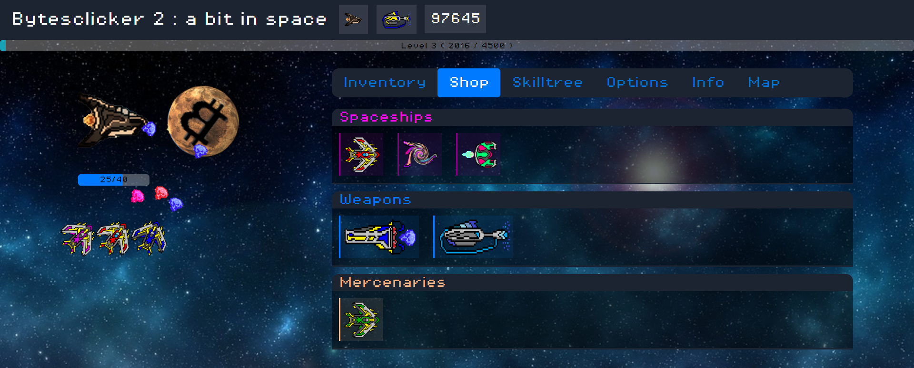
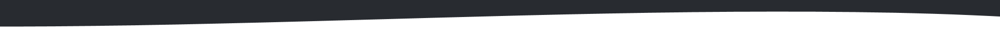

Trust-ePot
Trust-ePot est un projet de groupe dans le cadre du DUT informatique. Il s'agit d'une application web permettant de gérer des capteurs sur des plantes, ainsi que de notifier l'utilisateur quand des variables (Température, pH, Luminosité, Humidité) dépassent les normes indiquées dans une base de donnée de plus de 48000 plantes. Dans ce projet j'ai surtout travaillé sur l'application web avec CodeIgniter (php), Bootstrap, Javascript, NodeJS, MQTT, jQuery et Charts.JS
Truest-ePot est un des projets qui me tiens à coeur et il est toujours en développement un an après son commencement alors que nous suivons tous aujourd'hui une formation différente.


Application de gestion de stock et d'achats groupés
J'ai réalisé au cours de mes 10 semaines de stage en DUT Informatique un logiciel de gestion de stock et d'achats groupés en ligne pour un groupement d'études d'huissier de justice. J'ai réalisé ce projet seul et ai donc du prendre en compte de nombreux aspects, de la conception à la mise en production. Notamment la génération de bon de commande en pdf, de notifications journalière par mail, l'ajout d'articles le plus optmisé possible et la gestion de leur stock.

La Salière
La Salière est un projet de groupe sur une semaine en partenariat avec la société luxembourgeoise Awevo dans le cadre du DUT informatique. Le sujet était de lier une boutique en ligne à un bouton flic.io, à la manière des dash buttons d'amazon. Pour cela nous devions au préalable créer une boutique à l'aide du CMS Magento (nous avons choisi le thème des épices), puis créer une interface web utilisant l'API Rest de magento afin de paramétrer les actions du bouton. J'ai travaillé sur les principaux aspects du projet : l'installation et le paramétrage de magento ainsi que les scripts php de l'interface web, notamment ceux utilisant l'API de magento.


Bytesclicker
Bytesclicker est l'un de mes premiers gros projet personnel et celui sur lequel j'ai consacré le plus de temps. Il s'agit d'un jeu sur navigateur, un "clicker" très largement inspiré du jeu cookie clicker. J'ai développé deux versions en utilisant principalement Javascript.
J'ai réalisé tout d'abord une version basique, ne fonctionannt que sur google chrome ayant pour thème les bitcoins. Il s'agit simplement de cliquer sur un bouton pour accumuler des points et acheter des améliorations.
Après avoir acquis plus de connaissance j'ai décidé de faire une seconde version cette fois orientée sur l'espace avec quelques clins d'oeils à la première version. Il s'agit cette fois d'améliorer un vaisseau spatial en tirant avec celui-ci sur une planète pour accumuler des points.
Portfolio
Ce portfolio est directement inspiré de l'application Discord, surtout pour les couleurs du mode nuit. L'idée de l'effet coulissant m'est venue des écrans incurvés (sur lequel le portfolio prend tout son sens bien qu'il soit responsive et adapté aux mobiles).
Je l'ai réalisé en Javascript avec l'aide de la bibliothèque Jquery, sans utiliser de framework css afin qu'il reste le plus original possible.
Back-End
Pendant mes 2 ans en IUT informatique, le PHP était imposé dans la plupart des projets web, j'ai de plus, réalisé un stage de 10 semaines où le PHP était également imposé, j'ai donc beaucoup d'experience avec ce langage ainsi que ses différents framework, j'ai notamment utilisé CodeIgniter, Laravel et CakePhp.
Les languages à utiliser étant moins imposé en Licence Professionelle CIASIE, j'en ai profité pour apprendre NodeJS avec lequel j'ai plus d'affinité et ai pu mener à bien plusieurs projets de groupe au cours de l'année
En terme de base de donnée je maitrise efficacement MySql, ainsi que NoSql avec MongoDB.
J'ai du utilisé pour mener à bien mes projets des outils tels que Git, Docker ou encore Trello, j'ai également pratiqué la méthode agile Scrum à la fois en dut informatique et lors de ma licence professionelle.
Front-End
Bien qu'étant plus axé Back-End de part mes formations, j'ai toujours voulu être le plus polyvalent possible. Je m'intéresse donc énormément aux design des sites que je visite et aux moyens qu'ils emploient. J'aime prendre le temps qu'il faut afin de rendre mes sites les plus agréable possible à naviguer pour les utilisateurs.
En terme de programmation front en Javascript, en plus de Jquery, j'utilise également reactJs et VueJs, j'ai aussi utilisé au fil des projets une multitude de module Javascript.
J'ai acquis au cours de ma formation les bonnes-pratiques à avoir lors de la conception de document web, comme l'importance de rester dans le flux du document, l'utilsation de post processeur css tel que Sass. Ou encore les différentes manières de sécuriser une page web et d'optimiser son chargement sur toutes les plateformes.
Qui suis-je ?
J'ai 20 ans, J'étudie dans le domaine de l'informatique et je suis un parcours plutôt typique depuis Septembre 2016, date à laquelle j'ai rejoint l'IUT informatique de Metz. Au cours de ma deuxième et dernière année en IUT, j'ai décidé de me spécialiser dans le développement web. J'ai donc postulé à la Licence pro CIASIE de Nancy dans laquelle je finalise aujourd'hui ma formation. Afin d'obtenir ma licence professionelle, je dois effectuer un stage de 12 semaines en entreprise.
En plus de l'informatique et du web, j'adore le rock, notamment les genres alternatifs et britanniques (debaser est un clin d'oeil à la chanson du même nom des Pixies). Je suis également un amateur d'esport et un grand fan des petits studios de jeux vidéo indépendants tels que Blizzard ou Nintendo.
Mes points forts
Travail de Veille au quotidien
Etant très investi dans le développement web, je m'intéresse beaucoup aux technologies utilisées sur les sites que je visite au quotidien, j'ai également beaucoup d'idées de projets personnels (plus que je n'ai de temps pour les réaliser) J'ai donc beaucoup de culture orientée web
Très bon niveau d'Anglais
La communauté de developpeur web utilise essentiellement l'anglais, mon niveau me permet ainsi de faire des recherches et me documenter très rapidement sur une technologie, une erreur, de comprendre facilement ce que fait un code, et de participer aux discussions de la communauté.
Polyvalent
Et pas seulement en terme de technologie, en effet j'aime autant travailler seul, qu'en équipe ou en peer programming et j'essaye toujours de mener mes collègues dans la bonne direction et cela en maintenant une bonne entente et une bonne coordination.
Programmation consistante
Je prends à coeur de toujours programmer de manière efficace mais également propre, afin d'obtenir un code lisible, commenté et donc compréhensible par d'autres programmeurs mais également optimisé et sans faille.
